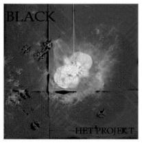
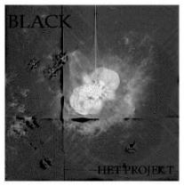
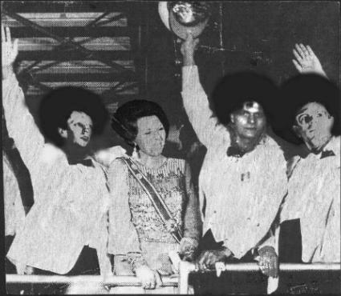

Discografie

Discografie
Cassettes:
 


CD's :
 DéPRO
DéPRO
De eerste opnames van Het Projekt staan op deze cassette.(Van het allereerste optreden van Het Projekt zijn geen opnames gemaakt).
De songs ontstonden vaak spontaan. De meeste songs zijn in één keer opgenomen met (vaak) één microfoon of met de koptelefoon op een bandrecorder. Het krijgt op die manier onbedoelt een autentiek jaren tachtig punk geluid. The Fall had ook zo'n 'sound'.
De bezetting wisselde in het begin nogal. De muzikanten schroomden niet om van instrument te wisselen. Het gaat te ver om bij elk nummer de uitvoerende muzikanten en hun instrument in dat nummer te benoemen.
Mensen die op deze cassette meespeelden zijn :
Hans Kerkhof: drums - René Nelissen: bas/zang - Ed van der Mije: gitaar -Stevan Ordelmans: zang
Hans Bentum: zang - Martijn de Clerck: Bas/gitaar - Roelof...:gitaar
Nummers:
01: Dépro (live van 2e optreden)
02: I hate you
03: Back to the base
04: Going strange
05: Zwart-wit
06: Clouds in my eyes
07: Leave me alone
08: why wait
09: chicken soup
10: my friend is an asshole
11: She loves me not
12: Nada
 Piano Poem
Piano Poem
Piano Poem is ontstaan in één nacht, in Débarak. Het zijn niet zo zeer songs die op deze cassette staan maar eerder 'werken'. De piano is daarbij het centraal instrument. De digital délay zorgt voor een vervremende sfeer. Die digitale délay was door Jan Taurus achter gelaten na een optreden. Dit gebeurde wel vaker. Jan verzorgde de P.I. voor bandjes die in Débarak optraden. Hij haalde vaak de volgende dag zijn apparatuur pas op. Daar heeft Het Projekt dankbaar gebruik van gemaakt door s'nachts met de installatie hun gang te gaan. Jan is niet langer onder ons daarom is dit tevens een memorandum.
Op deze cassette staan ook enkele gedichten van René op begeleiding van 'muziek'.
Nummers:
01: Drum drum piano
02: 3 times
03: Grijs
04: Tsjaikovski
04: Notes
05: City lights
06: Pietjes
07: Songs from a storm.
Gedichten:
Het leven van de eenzame werkloze jongeman
1 november 1985
Grijs/Zwart
 Black
Black
Black is een album waarop Hans Kerhof, Ed van der Mije, Roelof (uit Oosterbeek) en René Nelissen samen speelden. Zoals de titel en hoes doet vermoeden is de sfeer van deze cassette zwarter dan zwart.
Nummers:
01: I hate you
02: The light
03: Why
04: Marching soldiers
05: Speed up
06: Eddie is gone
07: The tumb
08: Alone again
09: So strong
10: End of the tale
 Gemoduleerd
Gemoduleerd
it is één van de latere opnamen die er van Het Projekt gemaakt zijn na het vertrek van hans Kerkhof naar Enschede waar hij naar de kunst academie ging om zijn talenten voor vormgeving tot hogere kunst te verheffen.. Hans Kerhof werd door Stevan Ordelmans opgevolgd als drummer. Verder heeft Ed zijn zangkunsten uitgebouwd en speelt Hans Bentum samen met Robin Teering op de gitaar. René schreeuwt en speelt bas. De cassette waar deze bijzondere opnamen op stonden had de tand des tijds amper doorstaan. Dat valt o.a. te horen in :'Black boxes'. Er is gekozen om de nummers niet op te poetsen digitaal maar ze in hun orginele slechte staat te laten.
Nummers :
01: Aaoo
02: Ask yourself
03: Black boxes
04: Burried my father
05: I just say...
06: In reverce
07: showdown
08: The light
09: What's another goodbye ?
10: When the king (instrm)
11: Why ?
12: You've got an answer
 5 mei
5 mei
Elk jaar op 5 mei organiseerde de Hanzehof te zutphen in de Hanzehal een dag voor bandjes uit Zutphen en omgeving. In de begin jaren was de entree gratis. Later werd dit 2,50 gulden. Elk jaar weer kwam het publiek in grote getalen naar de uitvoerende bands kijken. Het Projekt speelde er op 5 mei 1986. Van dit optreden zijn video opnames gemaakt. Daarvan is een audiocassette getrokken.
Nummers:
01: NR 1
02: The Light
03: You can buy me
04: I hate you
05: Black Boxes
06: Change
07: Run
08: Only Buildings
09: Stand up
10: Orgasm
 Black
Black
Op deze cassette staan in feite meerdere opnamen. Zoals dat 'vroeger' ging wist je elke minuutje van een cassette te benutten. Het gevolg is dat het een verzamel band wordt met zeer uiteenlopende nummers.
Bezetting : hans Kerkhof - drums, Ed van der Mije - zang/gitaar, Robin Teering - gitaar, René Nelissen - zang/bas.
Nummers:
01: Ha ha ha
02: Show down
03: Why ?
04: The funeral song
05: Marching soldiers
06: Airport
07: Bad day
08: Another Pink Floyd ?
09: Orgasm nr 2
10: God
11: Say no more
12: Mc Carthy
13: Nuce attack
14: Zwart-wit
15: Where are the young boys
16: Pretty women
17: Ask yourself
 Woutwal Festival
Woutwal Festival
Tijdens het Woutwal Festival, wat buiten voor Débarak werd gegeven, had Martin (de punker) kans gezien om met zijn ghettoblaster enkele bands op te nemen. Gelukkig voor Het Projekt want ander opname materiaal bestond er niet. De video opnamen waren mislukt.
Het was een gedenkwaardige dag voor de muzikanten van Het Projekt want het was het laatste optreden dat ze zouden houden. De bezetting die dag was : Hans Kerhof: drums, Robin Teering: keyboard en gitaar, Ed van der Mije: gitaar en zang, René Nelissen: Basgitaar, keyboard en zang, Hans Bentum: Zang en gitaar. Er speelden vele bandjes die middag en avond (zie poster). De sfeer was goed en het weer was ietwat aan de frisse kant.
Nummers:
01:Nr 1
02:The Light
03:You can buy me
04:Black boxes
05:Change
06:Run
07:South Africa (voorheen : 'Stand up')
08:I hate you
09:Orgasm
10:Only buildings
11:Why ?
Het laatste nummer 'Why' stond symbool voor het protest tegen het nieuwe politie bureau dat naast Débarak was verschenen. Bij eerdere acties hadden enkele vrijwilligers van Débarak de betonnen heipalen met leuzen tegen de politie beklad. Aan de burgemeester de taak om één van die palen de grond in te slaan. De bouwvakkers kozen voor die gedenkwaardige gebeurtenis juist de paal uit met de tekst : "Stop Politie !". Zo verscheen het in het Zutphens Dagblad op de foto.
Deze poster groter
 You can't do that on stage anyhow
You can't do that on stage anyhow
Na negen jaar kwamen Hans, Ed en René in 1995 weer samen om te spelen. In Wolfheze in studio Helios werden de opnames gemaakt. Het levert een mengeling op van oud werk en nieuwe experimenten.
De titel en het hoesje zijn geinspireerd op Frank zappa's live cd reeks: 'You cant do that on stage anymore'.
Nummers:
01: I hate you
02: The light
03: Why
04: Marching soldiers
05: Speed up
06: Eddie is gone
07: The tumb
08: Alone again
09: So strong
10: End of the tale
 Leve de Koningin !
Leve de Koningin !
Een nederlandstalige titel voor een voornamelijk engelstalige band ??? Hieruit blijkt dat geen enkele conventie vat kon krijgen op Het Projekt. Er staan gewone songs op maar ook enkele uitstapjes naar het nederlands repertoire. Van deze hoes bestaat ook een 'afro American' concept, welke echter om onduidelijke redenen nooit is gebruikt. "Leve de koningin"
Nummers:
01: Ideology
02: Hard bargen
03: This sucks
04: Every time
05: I love you
06: On the road
07: Are you sattisfied
08: I'm going away
09: The guy was drunk
10: In de supermarkt
11: Monologue interrieur
12: Die grenze
13: Uber die berge
14: Die smurfen
15: Twinkel in jouw ogen
16: De clown
17: Jojo Buitenzorg
18: Willie Alfredo
19: In de kroeg
20: Johnny Johnny
21: New york
22: Die generation
23: I'm a believer
24: Flight over Bagdat
25: Testikels
26: Billy jean
27: Why does it hurt when I pee
28: De opelshow.
 Cash Cash Cash
Cash Cash Cash
Weer een opname vanuit AMP te Amsterdam.
Hieruit blijkt hoezeer Ed, Hans en René op elkaar zijn ingespeeld.
Nummers:
01: The Light
02: Only buildings (soft version)
03: Oh pretty girl
04: Ha !
05: I'll never come home
06: Johnny Johnny
07: Ik rook niet meer
08: Nokken
09: Count yourself lucky
10: It won't fit
11: Disciplin
12: The Robert Crumb song
13: Jesus loves you
14: I'm belonging to you
15: Whow
16: Eating salad
17: I'll never come home II
 Sheep
Sheep
De cassette 'The performing Sheep' werd ook live opgenomen in one
track in de oefenruimtes van AMP te Amsterdam. Later zijn de songs bewerkt en opnieuw
opgenomen. De hoes werd op de computer gemaakt door René en was een reactie op het gekloonde schaap 'Dolly'. De titel verwijst naar een seizoens opening van Débarak die door Hans en René werd verzorgd en de titel droeg:'The performing Fish'
Nummers:
01: Sheep(aren't we all)
02: Mixed up
03: Eternity
04: This is illegal
05: The white man's bitches son
06: The children of Laos city
07: Josie
08: Onderaan de ladder
09: Mr Grover
10: Permanent
11: Permanent part 2
12: To wild
13: 'T doet zo'n pijn
14: Save the lord
15: I know this man
16: Permanent part 3
17: Black boxes
18: Graphic equaliser
19: The killer
20: De Opel show
21: Maria
22: Focus my eyes
23: Mary-lou
24: This is for you
25: Only buildings
26: After shock
27: Dream away
28: Je suis une trou.
 The lost tapes 1
The lost tapes 1
Dit is de eerste remastering van
cassettes naar CD. De beste songs van de eerste cassettes zijn hierop te vinden
Nummers:
01: Ok Hallo
02: Going Strange
03: Clouds in my eyes
04: Back to the base
05: Only Buildings(mei '85)
06: Dépro
07: Orgasm nr 1
5 mei '86 :
08: Nr 1
09: The Light
10: Black Boxes
11: I hate you
12: Change
13: Run
14: Stand up
15: Orgasm nr 2
16: Leave me alone
Bonus tracks :
17: Herhalen
18: Orgasm nr 3
 The lost tapes 2
The lost tapes 2
Dit is de tweede remastering van
cassettes naar CD. Een goed vervolg op de eerste verzamel CD !
Nummers:
01: Tom Tom
02: Airport
03: Orgasm 2
04: Another Pink Floyd
05: Awakening
06: Bad Day
07: Falling Bombs
08: Insain
09: Wisle
10: Why ?
11: Wash Tone
12: Tape Chant
13: Forget Everything
14: Drop Down
15: Church Dog Rain
16: Chicken
17: A Difference
18: Only Buildings I
19: Only Buildings II
20: Walking The Lane
21: The Wishes Become
22: Where Are The Young Boys
 The very best of
The very best of
Dit is voorlopig de laatste cd van Het Projekt. Hierop staan de allerbeste songs, geremastered en zorgvuldig geselecteerd op 11-4-2002.
Nummers:
01: Count yourself lucky(Cash cash cash)
02: Leave me alone(Depro)
03: Going strange(Depro)
04: Only buildings - soft version(Cash cash cash)
05: Clouds in my eyes(Depro)
06: Jesus loves you(Cash cash cash)
07: The light(Woutwal festival)
08: Why ?(Gemoduleerd)
09: Orgasm nr 2 (WooW)
10: Only buildings(Depro)
11: The white man's bitches son(Sheep)
12: I hate you(5 mei)
13: Airport(WooW)
14: This is for you(Sheep)
15: Bad day(WooW)
16: Orgasm(5 mei)
17: Black boxes(Woutwal festival)
18: Children of Laos city (Sheep)